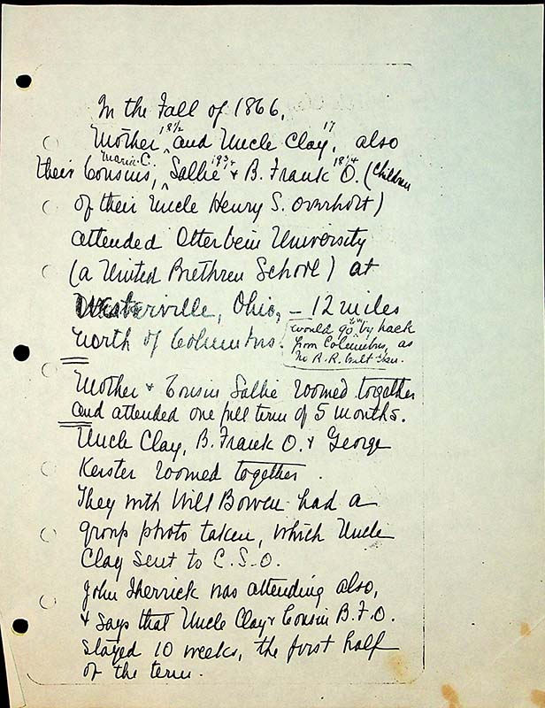
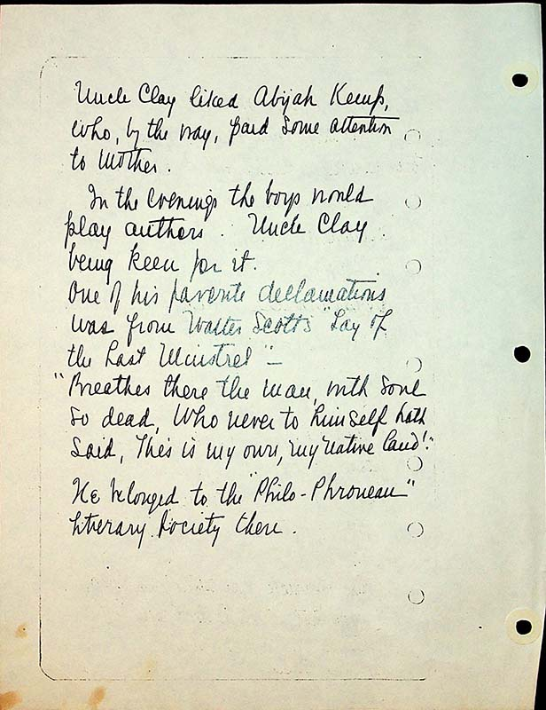
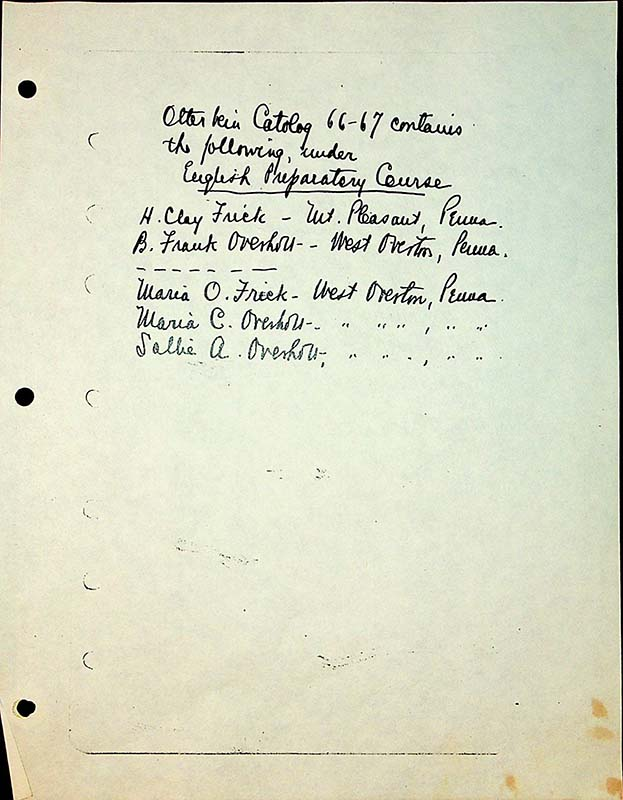
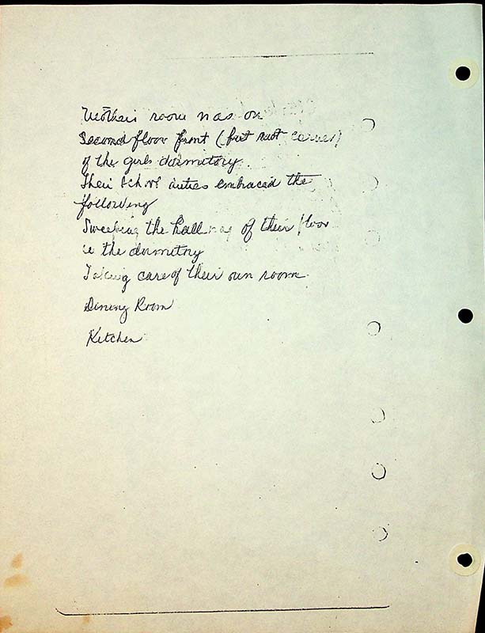

In the fall of 1866,Mother 18 ½ and Uncle Clay 17 w, also their cousins, Sallie 19 ¾ & B. Frank O. (Children of their Uncle Henry S. Overholt) attended Otterbein University (a United Brethren School) at Westerville, Ohio, 12 miles north of Columbus. (would go by hack from Columbus as no RR built then)
Mother and Cousin Sallie roomed together and attended one full term of 5 months.
Uncle Clay,B. Frank O& George Kester roomed together.
They with Will Bowen had a group photo taken, which Uncle Clay send to CSO
John Sherrick was attending also & says that Uncle Clay and Cousin BFO stayed 10 weeks, the first half of the term
Uncle Clay liked Abijah Kemp, who, by the way, paid some attention to Mother
In the evenings the boys would play authors. Uncle Clay being keen for it. One of his favorite declarations was from Walter Scott’s “Lay of the Last Minstrel”-
“Breathe there the man, with soul so dead, who never to himself hath said, This is my own, my native land!”
He belonged to the “Philo-phronean” Literary Society there.
Otterbein Catablog 66-67 contains the following under English Preparatory CourseH. Clay Frick- Mt Pleasant Penna
B. Frank Overholt- West Overton, Penna
Maria O Frick - West Overton, Penna
Maria C. Overholt “ ” ” , “ ”
Sallie A. Overolt “ ” ‘’ “
Mother’s room was on second floor front (but roof covered) of the girls dormitory.
Their school duties embraced the following:
Sweeping the hallway of their floor in the dormitory
Taking care of their own room
Dining room
Kitchen